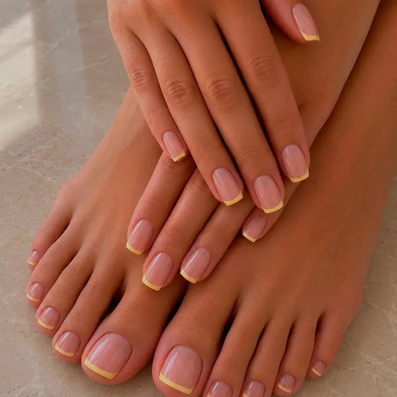

Manikür ve pedikür yalnızca estetik bir işlem değil — düzenli yapıldığında tırnak batması, kalınlaşma ve kütikül yırtılması gibi sorunları büyük ölçüde önler. İzmir genelinde manikür ve pedikür için adresinize geliyor, tüm ekipmanı steril olarak yanımızda getiriyoruz.

Manikürde Neler Yapılıyor?
- Şekillendirme: Tırnak boyu ve formu (oval, badem, kare, yumuşak kare) el yapınıza göre belirlenir.
- Kütikül bakımı: Yumuşatıcı sonrası itme ve gerekli noktada temizlik. Kesme işlemi minimumda tutulur.
- Yüzey düzenleme: Tırnak yüzeyindeki çizgiler hafif buff ile eşitlenir; aşırı inceltmeden kaçınılır.
- Nemlendirme: Kütikül yağı ve el kremi ile bitiş.
- İsteğe bağlı renk: Normal oje veya kalıcı oje.
Kütikül kesiminden rahatsızsanız rus manikürü daha uygun olabilir — frezeyle çalışıldığı için kesme ihtiyacı büyük ölçüde ortadan kalkar.
Pedikürde Neler Yapılıyor?
- Yumuşatma: Ayaklar ılık suda veya yumuşatıcı solüsyonla hazırlanır.
- Tırnak bakımı: Kesim düz yapılır — batık tırnağı önlemenin en temel kuralı budur.
- Nasır ve kallus: Topuk ve basınç noktalarındaki sertleşmiş doku incelikle azaltılır.
- Peeling ve masaj: Dolaşımı destekleyen kısa masaj ile bitirilir.
Ne Sıklıkla Yaptırmalı?
Manikür
2-3 haftada bir. Tırnak uzama hızınıza ve el kullanımınıza göre değişir.
Pedikür
4-6 haftada bir. Yaz aylarında ve çok yürüyenlerde aralık kısalabilir.
Kalıcı Ojeli Manikür
2-3 haftada bir yenileme. Dipte uzama görünür olduğunda zamanı gelmiştir.
Evde Aralarda Ne Yapmalısınız?
Randevular arasındaki bakım, sonucun ne kadar süreceğini doğrudan belirliyor:
- Kütikül yağını günde bir kez uygulayın — en etkili tek alışkanlık budur.
- Bulaşık ve temizlikte eldiven kullanın; deterjan tırnağı kurutur.
- Tırnağı alet olarak kullanmayın (kutu açma, kazıma).
- Ayak tırnaklarını düz kesin, köşeleri oymayın.
Ayrıntılı rutin için günlük tırnak bakım rutini ve yaygın bakım hataları yazılarımıza bakabilirsiniz.
Sık Sorulan Sorular
Manikür ve pedikür arasındaki fark nedir?
Manikür el ve el tırnaklarına, pedikür ayak ve ayak tırnaklarına yapılan bakımdır. Pedikürde ek olarak nasır ve kallus bakımı yer alır, bu yüzden ortalama süresi daha uzundur: manikür 30-45 dakika, pedikür 45-60 dakika.
Aynı randevuda ikisini birden yaptırabilir miyim?
Evet, en sık tercih edilen kombinasyon bu. Toplam süre yaklaşık 90 dakikadır ve ayrı ayrı randevuya göre hem zaman hem maliyet açısından avantajlıdır.
Hijyen konusunda nasıl bir yol izliyorsunuz?
Metal aletler otoklavda sterilize edilip kapalı poşetlerde taşınır ve randevuda önünüzde açılır. Törpü, buff ve freze uçları tek kullanımlıktır.
Ayak tırnağım batıyor, bakım yapabilir misiniz?
Batık henüz iltihaplanmamışsa düz kesim ve kenar rahatlatma ile önemli ölçüde iyileşme sağlanır. Ancak kızarıklık, şişlik veya akıntı varsa bu tıbbi bir durumdur; bu durumda bakım yapmayıp sizi bir podolog veya hekime yönlendiriyoruz.
Hamilelikte pedikür yaptırabilir miyim?
Evet, hamilelikte pedikür yaygın olarak tercih edilir; özellikle son aylarda eğilmek zorlaştığı için eve gelen hizmet büyük kolaylık sağlıyor. Kokudan rahatsız olabileceğiniz için düşük kokulu ürünlerle çalışabiliriz — randevuda belirtmeniz yeterli.
Bakım Randevunuzu Oluşturun
Hangi bakımı istediğinizi ve uygun gününüzü yazın; aynı gün içinde randevu saatinizi netleştirelim.
İlgili sayfalar: Manikür ve pedikür fiyatları · Rus manikürü · Kalıcı oje